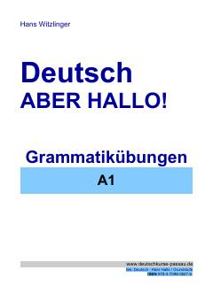

DANemis tili A1 darajasi uchun amaliy grammatika mashqlari to'plami.
Ushbu qo'llanma nemis tilini A1 darajasida o'rganuvchilar uchun mo'ljallangan bo'lib, asosiy grammatik qoidalar va amaliy mashqlarni o'z ichiga oladi. Kitobda fe'llarning tuslanishi, olmoshlar, otlar va ularning kelishiklari kabi boshlang'ich mavzular batafsil tushuntirilgan. Materiallar mustaqil o'qish va nemis tili kurslarida qo'shimcha darslik sifatida foydalanishga moslashtirilgan.